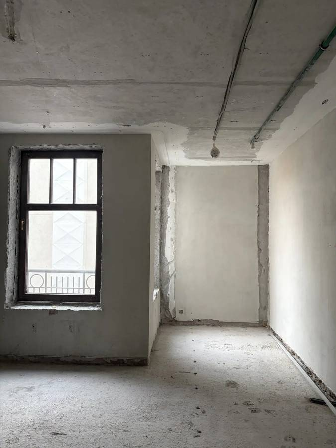

01Гостиница · чистовая отделка
Гостиница на Никольской
Москва, ул. Никольская, 4/5
Подготовка предложения на 48 номеров по типовому номеру № 531. Требования, материалы, объёмы, условия площадки и договорный пакет.
Открыть всю страницуРесурсПроект · как мы работаем
Каждый объект — своя история подготовки заказа. Выберите его, чтобы посмотреть путь от первого запроса до договорного комплекта: задачу, фотографии, этапы и документы.
Подборка будет пополняться

01Гостиница · чистовая отделка
Москва, ул. Никольская, 4/5
Подготовка предложения на 48 номеров по типовому номеру № 531. Требования, материалы, объёмы, условия площадки и договорный пакет.
Открыть всю страницуСтраница будет дополнена
Название и описание добавим позже
Пока доступен исходный материал по ссылке. Для просмотра может потребоваться вход в Claude. Полная страница объекта появится после переноса материалов.
Открыть материалВнутри объекта — описание процесса и оснований. Подготовка файла, его согласование и заключение договора показаны как разные события.
Смотреть портфолио компании ↗